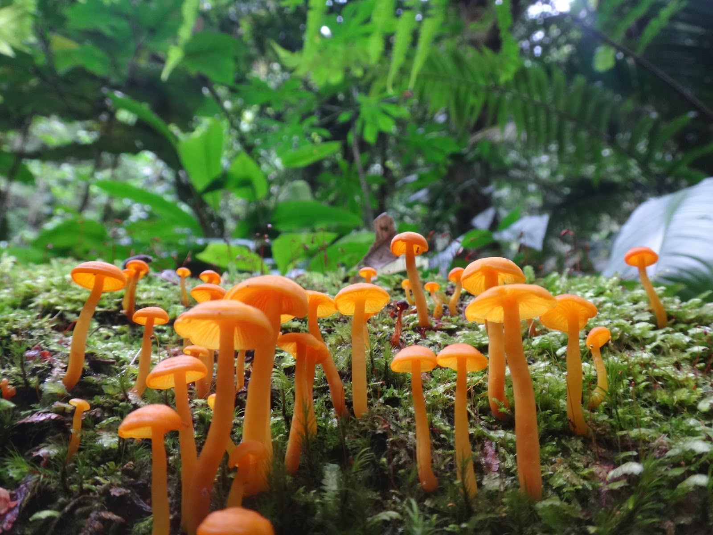
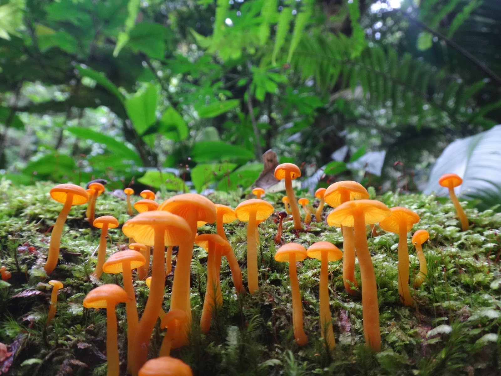

Iporanga, localizada no Vale do Ribeira, São Paulo, é conhecida por suas belezas naturais e biodiversidade. O município é um ponto de acesso ao Parque Estadual Turístico do Alto Ribeira (PETAR), famoso por suas cavernas e paisagens preservadas. A região abriga espécies endêmicas, como o mico-leão-da-cara-dourada, e uma vegetação exuberante da Mata Atlântica. Iporanga oferece diversas atividades ao ar livre, como trilhas e passeios de caiaque, sendo um destino ideal para quem busca tranquilidade e contato com a natureza.
O Vale do Ribeira e suas Cavernas
O Vale do Ribeira é considerado um dos maiores polos espeleológicos do Brasil. A região abriga centenas de cavernas, algumas das mais conhecidas e visitadas estão em Iporanga, e atraem espeleólogos e aventureiros de todo o mundo. A famosa Caverna de Santana, localizada dentro do Parque Estadual Intervales, é uma das mais impressionantes. Com mais de 7 km de galerias e várias salas e salas subterâneas, ela é um dos maiores complexos de cavernas do estado e um excelente ponto de partida para quem deseja explorar o mundo subterrâneo do Vale do Ribeira. A caverna possui um vasto sistema de galerias, rios subterrâneos e belos espeleotemas como estalactites e estalagmites.
Outro local de destaque é a Caverna do Diabo, uma das cavernas mais conhecidas da região, que também está situada no Parque Estadual do Alto Ribeira (PEAR). A Caverna do Diabo é famosa por seu tamanho imponente e pelas suas formações rochosas impressionantes. Ela é bastante procurada por turistas que buscam um passeio mais aventureiro, já que o acesso é um pouco mais desafiador, com trechos que exigem uma boa preparação física e o auxílio de guias experientes. Dentro dela, é possível ver grandes formações calcárias e, dependendo da época do ano, pode-se ouvir os sons misteriosos do eco nas galerias.
Além da sua beleza cênica, as cavernas do Vale do Ribeira têm um grande valor científico. Elas abrigam uma grande diversidade de fauna e flora, muitas das quais são endêmicas da região. Isso inclui morcegos, anfíbios e insetos que se adaptaram ao ambiente subterrâneo, tornando o estudo dessas cavernas importante para o entendimento da biodiversidade local.
Iporanga e as cavernas do Vale do Ribeira são também um refúgio para quem busca tranquilidade e contato direto com a natureza. Além das cavernas, a região é cercada por áreas de mata atlântica preservada, proporcionando aos visitantes a chance de realizar trilhas, caminhadas e até passeios de caiaque nos rios cristalinos da região. O clima ameno e a abundância de verde fazem de Iporanga um destino inesquecível para quem deseja explorar a natureza selvagem do interior paulista.
Em suma, Iporanga e o Vale do Ribeira são verdadeiros tesouros naturais do Brasil, oferecendo uma combinação única de belezas cênicas, biodiversidade e aventura. Para quem gosta de explorar o desconhecido, as cavernas da região são uma experiência imperdível, e a cidade de Iporanga é o ponto de partida ideal para essa jornada.


Fauna e Flora de Iporanga
A fauna de Iporanga é um dos maiores atrativos da região, oferecendo uma grande diversidade de espécies que habitam tanto a floresta densa quanto as cavernas subterrâneas. Entre os mamíferos que podem ser encontrados na região, destaca-se o mico-leão-da-cara-dourada, um primata endêmico da Mata Atlântica, que é ameaçado de extinção. A presença dessa espécie em Iporanga é um indicativo da importância da preservação da região e dos esforços para garantir sua sobrevivência.
Além do mico-leão, Iporanga abriga uma grande variedade de outros mamíferos, como o tamanduá-bandeira, a onça-parda e o tatu-canastra, animais que são símbolos da fauna brasileira. A região também é um excelente local para a observação de aves, especialmente para os ornitólogos, que podem encontrar espécies como o gavião-pega-macaco e o beija-flor. O pica-pau-de-cabeça-amarela, uma espécie rara e em risco de extinção, também é registrado nas florestas de Iporanga.
Outro aspecto fascinante da fauna de Iporanga é a diversidade de espécies que habitam as cavernas da região. Os morcegos são uma das presenças mais notáveis no ecossistema subterrâneo. Muitas cavernas em Iporanga servem como abrigo para diferentes espécies de morcegos, que desempenham um papel fundamental no controle de insetos e na polinização de algumas plantas.
A flora de Iporanga é igualmente rica e variada, com uma abundante vegetação típica da Mata Atlântica. A região é dominada por florestas densas, com árvores de grande porte, como a maçaranduba, a jequitibá, a cabraúva e a mogno. Essas árvores são fundamentais para a manutenção do equilíbrio ecológico da região, pois oferecem abrigo e alimento para inúmeras espécies de fauna, além de desempenharem um papel importante na captura de carbono e no ciclo da água.
As matas de Iporanga também abrigam uma grande diversidade de plantas epífitas, como orquídeas e cabeludinhas, que crescem sobre as árvores, aproveitando a umidade e a sombra do ambiente. As samambaias e musgos são comuns nas áreas mais sombrias, assim como as palmeiras e bromélias, que adicionam um colorido vibrante ao ambiente.
Outro destaque da flora local são as plantas medicinais e as frutíferas nativas, que são utilizadas pelas comunidades tradicionais da região para diversos fins. Muitas dessas plantas são conhecidas por suas propriedades curativas, e sua preservação é essencial para garantir a continuidade do conhecimento e da prática medicinal dessas populações.
Além disso, Iporanga possui um ecossistema de cavernas que abriga uma vegetação única adaptada ao ambiente subterrâneo. Embora a maioria das plantas que crescem nas cavernas seja de pequena escala, como musgos e fungos, a interação entre a fauna e a flora nesse habitat específico é um exemplo fascinante de adaptação ao ambiente escuro e úmido.
 

Parque Estadual Turístico do Alto Ribeira (PETAR)
O PETAR (Parque Estadual Turístico do Alto Ribeira) é uma das mais importantes e impressionantes áreas de conservação ambiental do estado de São Paulo, e está localizado no município de Iporanga, na região do Vale do Ribeira. Considerado um dos maiores e mais significativos parques naturais do Brasil, o PETAR é famoso principalmente por sua riqueza espeleológica, com centenas de cavernas, grutas e formações rochosas que atraem espeleólogos, turistas e cientistas de diversas partes do mundo.
Ele ocupa uma área de aproximadamente 35.000 hectares. O parque se estende pelos municípios de Iporanga, Apiaí, Eldorado e Sete Barras, todos localizados na região do Vale do Ribeira, que é uma das áreas de maior preservação de Mata Atlântica remanescente do país.
A principal porta de entrada para o parque está em Iporanga, onde os visitantes podem encontrar a base administrativa do PETAR e várias trilhas que levam às cavernas e outras atrações naturais. O acesso ao parque é feito por estradas vicinais, e é recomendado para os turistas utilizar veículos 4x4 ou contratar guias locais, uma vez que algumas áreas podem ser de difícil acesso.
O PETAR é conhecido por sua enorme quantidade de cavernas, com mais de 300 cavernas catalogadas, sendo um dos maiores polos espeleológicos do Brasil. Entre as cavernas mais famosas estão a Caverna de Santana, a Caverna do Diabo, a Caverna do Morro Preto e a Caverna do Ouro Grosso, que são abertas ao público e oferecem passeios guiados, com direito a explorar seus imponentes salões, formações de estalactites e estalagmites, e, em alguns casos, até rios subterrâneos.
Além das cavernas, o parque abriga uma grande diversidade de fauna e flora, sendo considerado um hotspot de biodiversidade da Mata Atlântica. A área é rica em espécies endêmicas, e seu ecossistema é fundamental para a preservação de várias espécies ameaçadas de extinção, como o mico-leão-da-cara-dourada, o tamanduá-bandeira, a onça-parda, e diversas aves raras. O parque também é um ótimo destino para o birdwatching (observação de aves), pois há uma grande quantidade de espécies de aves nativas que podem ser observadas durante as trilhas.
Outra grande atração do PETAR são seus rios cristalinos e cachoeiras, como a Cachoeira do Usina e a Cachoeira do Betari, que formam cenários deslumbrantes para quem visita a região. O parque também é uma excelente opção para quem gosta de atividades ao ar livre, como trilhas, caminhadas ecológicas, rapel, canoagem e até mergulho em cavernas.
Importância
O PETAR é uma das áreas mais importantes para a conservação da biodiversidade no Brasil, pois abriga uma das últimas porções de Mata Atlântica primária, um dos biomas mais ameaçados do planeta. Além disso, o parque está inserido em um dos maiores corredores ecológicos do estado, facilitando o deslocamento de animais e plantas entre áreas preservadas.
O parque também é crucial para a preservação das águas da região, já que várias nascentes de rios que cortam o Vale do Ribeira têm sua origem dentro de seus limites. Isso inclui o Rio Ribeira de Iguape, um dos principais rios da região, que abastece muitas cidades ao longo de seu percurso.